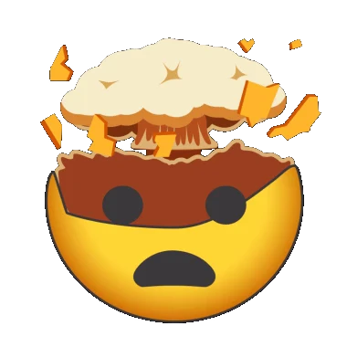
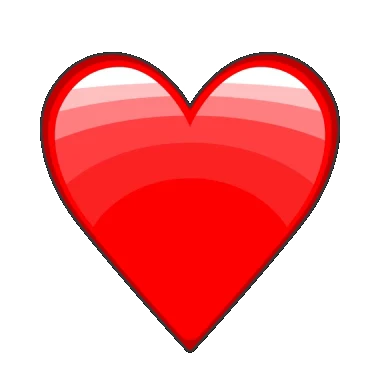

Culture creates the spark.
News, memes and social moments move people. Our characters make those reactions recognizable.
The world feels.
The market moves.
One headline can change how the whole internet feels.
Who rises? Who falls?
Rank 3 gainers and 3 losers.
The market decides.
A local draft until you sign in and submit to an open round.
Forecast ranks changes in token prices over the round. Pick the three biggest gainers and the three biggest losers, in order. An exact #1, #2 or #3 earns 100, 70 or 50 points. The correct top-three emotion in another position earns 30. No token can appear on both sides. News and social reactions provide context; they do not settle the result.
Current index mappings use external sample tokens. Official Tokemoji token markets and a live contest depend on the announced launch and an available round. No prize or payout is promised here.
EMOTIONS.
ONE UNIVERSE.
Follow the moves. Compare the opposites. Find your next forecast.
| EMOTION | PRICE | 24H | MARKET CAP | History |
|---|
Waiting for the market connection.
Sample-token market data. The connected mappings are external test assets, not official Tokemoji contracts. Missing quotes are shown as unavailable.
Turn your view into a forecast ↗It runs on feelings.
Fear dumps. Greed pumps.
Love builds communities. Hate gets attention.
Tokemoji gives those feelings a common language: twelve original characters, an emotion market, and a way to forecast its next move.
News hits. Mood shifts. Tokemoji reacts. ↘
Tap a character.
Meet a feeling.
News, memes and social moments move people. Our characters make those reactions recognizable.
Rank the emotions you expect to rise or fall. Results follow the round's market rules.
The vision: a tokenized emotion ecosystem, where market activity makes sentiment visible.
Built around the community.
Not an exclusive club.
This is the allocation published on the current Tokemoji site. Official contracts and launch availability must be confirmed through project announcements. The index's sample addresses are not purchase links.
Before you get started ↓The project direction, one chapter at a time.
The Tokemoji family, emotion index, market forecasts and first community campaigns.
Creator tools, streaming overlays and a new language for live reactions.
Embeddable widgets, shareable views and social and crypto community integrations.
Community feedback, partnerships and the next wave of emotion-powered experiences.
Roadmap items describe the vision. They are not claims that every feature has shipped or promises of release dates.

An ecosystem built around twelve recognizable emotions. It brings together character tokens, a market index and a prediction format for ranking the next market movers. The ambition is to make collective sentiment tangible through market activity.
The market. News can inform your choice, but Forecast asks you to rank three gainers and three losers by the round's token-price performance. It isn't a vote on which emotion a headline should cause.
You can explore the index and arrange a forecast without either. An account and an open round are needed to submit a prediction. A local draft is never presented as an account submission.
The current integration uses external sample-token mappings. Until official Tokemoji markets are announced, sample prices must not be treated as Tokemoji quotes or contract addresses. If data cannot be fetched, the index shows a missing value.
Each side has three ordered picks. An exact position earns 100, 70 or 50 points. A token in the actual top three but another position earns 30. All six exact positions earn the existing perfect-round bonus. See the full rules for streak and weekly-round details.
Read the scoring rules ↗No guaranteed prize, payout or financial return is promised on this page. Availability and any future campaign terms must be published separately.
Get to know the index and the market-data labels.
Choose three gainers and three losers, then review their order.
Only use official contract details when the project publishes them.

The next big feeling starts somewhere.
What do you think moves next?